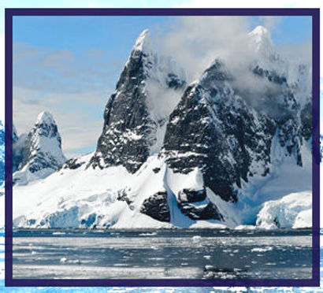
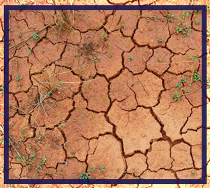
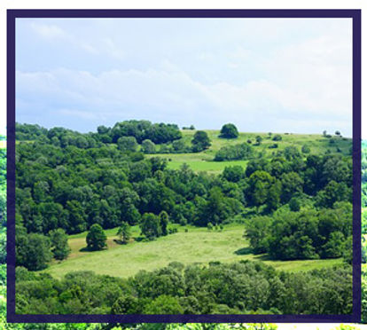
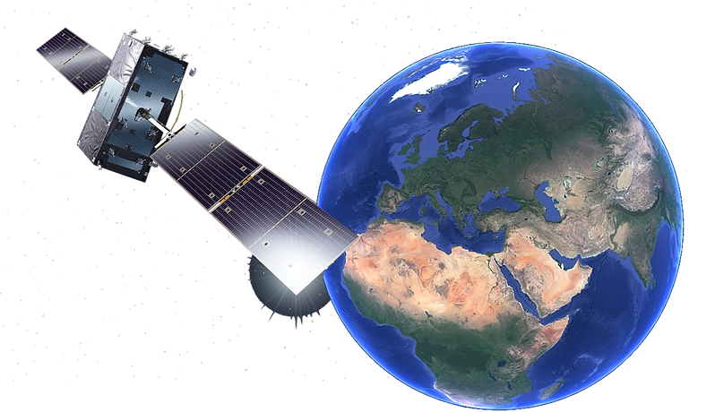
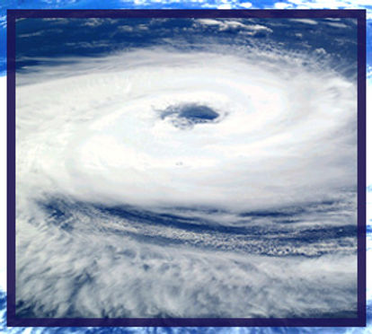
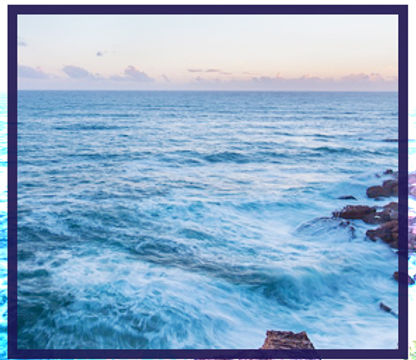

HOME
Broaden and deepen our understanding of the Earth Science
UNIST IRIS LAB
About US
The IRIS lab utilizes remote sensing, GIS modeling, and artificial intelligence techniques to broaden and deepen our understanding of the Earth science under climate variability/change, and leverages this knowledge to better manage and control critical functions related to terrestrial, coastal, and polar ecosystems, natural and man-made disasters, water resources, and carbon sequestration.



Polar Remote Sensing
Disaster Monitoring
and Assessment
Terrestrial Ecosystems

Remote Sensing
& GIS


Meteorological /Atmospheric
Remote Sensing
Water Monitoring
and Assessment
CONTACT
#1003-1, EBE-110, UNIST
UNIST-gil 50, Ulsan
Republic of Korea Ulsan
+82 52 217 2887